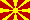

THE EUROPEAN CW ASSOCIATION
c/o E.C.M. of AGCW-DL

|
|
THE EUROPEAN CW ASSOCIATION
| |
Format of this list (sorted alphabetically):
Club short name and country
Original long name (English long name if available and if
different from original name)
Type of the club (generic, qrq, qrp, restrictions...)
ECM, call, name
 AGCW-DL (Germany)
AGCW-DL (Germany)
Arbeitsgemeinschaft CW DL (Activity Group CW DL)
Generic CW club
ECM: DL1GBZ, Martin


 BQC (The Netherlands)
BQC (The Netherlands)
Benelux QRP Club
QRP club
ECM: PA9RZ, Robert
CFT (Belgium)
Club Francophone Télégraphiste
French speaking club
ECM/Pres.: ON4LDL, Robert
 CTC (Croatia)
CTC (Croatia)
Croatian Telegraphy Club
Generic CW club
ECM/Pres.: 9A3FO, Mladen
 EHSC (Germany)
EHSC (Germany)
Radio Telegraphy Extremely High Speed Club
QRQ club, min. speed 300
ECM and secretary: DJ5CW, Fabian
 ESSEX CW CLUB (U.K.)
ESSEX CW CLUB (U.K.)
ESSEX CW Club
Generic CW club
ECM: G0IBN, Andrew
FISTS (U.K.)
FISTS CW Club - The International Morse Preservation
Society
Generic CW club
ECM: G3ZOD, Graham
FOC (U.K.)
First Class CW Operators Club
CW club limited to 500 members
ECM: G4WQI, Dean
G-QRP (U.K.)
G-QRP Club - Devoted to Low Power Communication
QRP club
ECM: M0KTZ, Enzo
 GPCW (Portugal)
GPCW (Portugal)
The Portuguese CW Group
ECM: CT1BQH, Carlos
 GTC(SV-CW-C) (Greece)
GTC(SV-CW-C) (Greece)
Greek Telegraphy Club
(Ελληνική
Λέσχη
Τηλεγράφηας)
Generic CW club
ECM: SV5DKL, Stathis
 HACWG (Hungary)
HACWG (Hungary)
Hungarian CW Group
QRQ club, min. speed 150
ECM: HA3NU, László (Lacy)
HSC (Germany)
Radio Telegraphy High Speed Club
QRQ club, min. speed 125
ECM: DK4LX, Holger
 HTC (Switzerland)
HTC (Switzerland)
Helvetia Telegraphy Club HTC
Generic CW club
ECM: HB9DST, Paul
 INORC (Italy)
INORC (Italy)
Italian Naval "Old Rhythmers" Club
Navy CW club
ECM: IK7LSE, Nicolo
I-QRP (Italy)
Italian QRP Club
QRP club
ECM: IZ3CLE, Marco
ITC (Italy)
ARI Club Radiotelgrafisti (Italian Telegraphy Club)
Generic CW club
ECM: I2CZQ, Pietro
MCWG (North Macedonia)
Macedonian Telegraphic Group
QRQ club, min. speed 150
ECM: Z35M, Vlado
Marconi (Italy)
Marconi CW Group
Generic CW club
Secr.: IK1QBT, Toni
NTC (The Nethetlands) (since
2021-Sep-15)
Netherlands Telegraphy Club
Generic CW club
Contact: Theo, PA3HEN
 OE-CW-G (Austria)
OE-CW-G (Austria)
OE-CW Group
Generic CW club
ECM: OE3LHB, Heinz
 OK-QRP (Czechia)
OK-QRP (Czechia)
OK-QRP-Club
QRP club
ECM: OK2BMA, Pavel


 SCAG (Scandinavia)
SCAG (Scandinavia)
Scandinavian CW Activity Group
Nordic CW club
ECM: SM5KRI, Krister
SHSC
(Germany)
QRQ club, min. speed 250
ECM and secretary: DJ5CW, Fabian
SPCWC (Poland)
SP-CW-C Polski Klub Telegrafistów (Polish Telegraphy
Club)
Generic CW club
ECM: SP2FAP, Syl
 RU-QRP (Russia)
RU-QRP (Russia)
Russian Amateur Radio RU-QRP Club
QRP club
ECM: RW3AI, Valery
 UCWC (Ukraine)
UCWC (Ukraine)
The International Morse Telegraphy Club UCWC
Generic CW club
Contact: UZ1RR, Vladimir
 UFT (France)
UFT (France)
Union française des Télégraphistes
Open to French speaking OPs
ECM: F6EEQ, Gérard
U-QRQ-C
(Russia/Ukraine)
United QRQ Club
QRQ club, min. speed 200
ECM: Mats, RM2D
VHSC (The
Netherlands)
Radio Telegraphy Very High Speed Club
QRQ club, min. speed 200
ECM: PG4I, Jo
Note 1: CW speeds are given in chars per minute.
Note 2: Should you find any errors in this list, PLEASE let me
know. I'm also interested to know about EuCW club web pages that I
did not point to on this page.
Thanks in advance.
Note 3: Clubs marked by a hash symbol (#) are candidate clubs. They will be approved if there are no objections after a given period of time. See also dormant clubs.
Note 4: Clubs with a vacant ECM post are subject to article II section 5 of the EUCW constitution, i.e. their membership expires after two years of ECM vacancy.
Note 5: The complete list is also available as PDF
file. The handling instructions are given in CW
here.